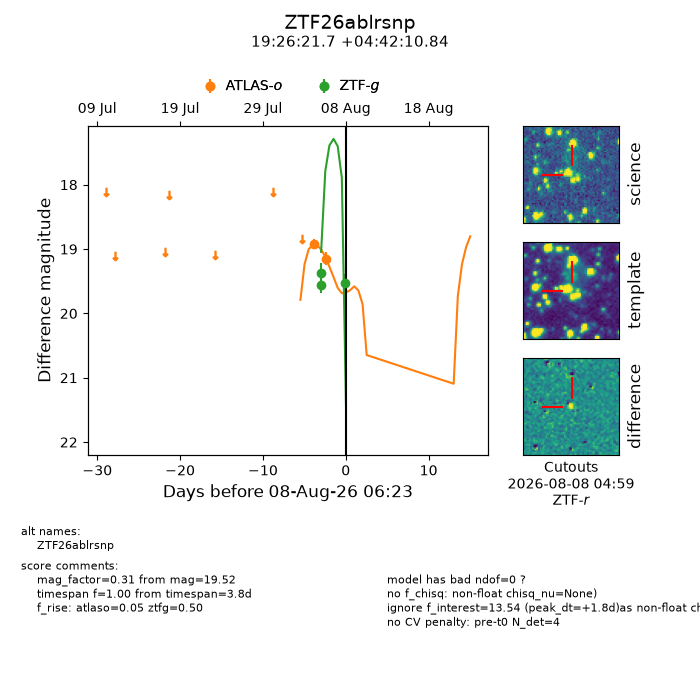
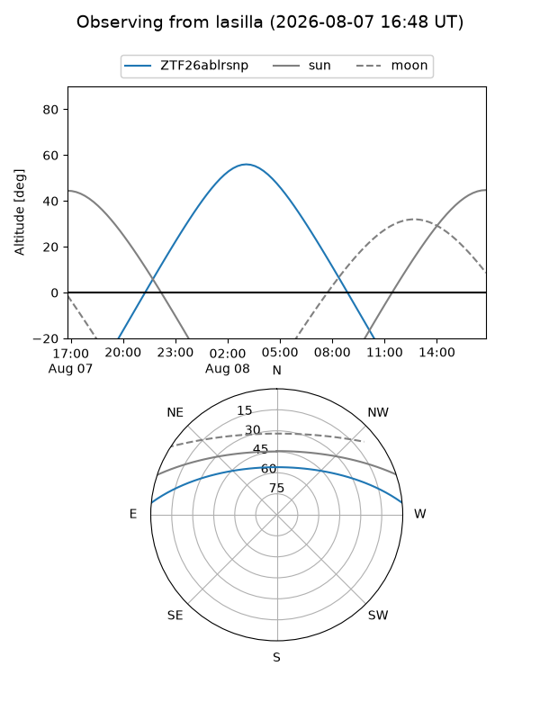
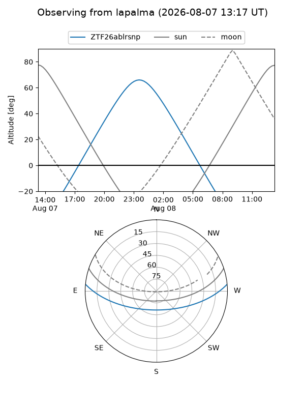
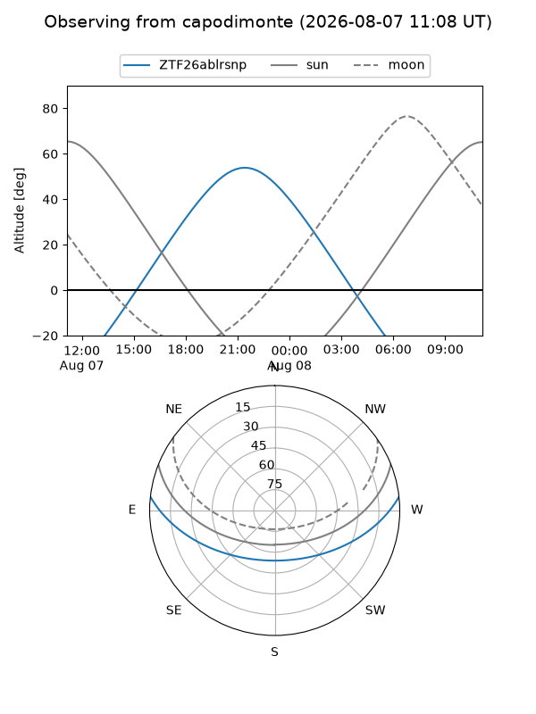
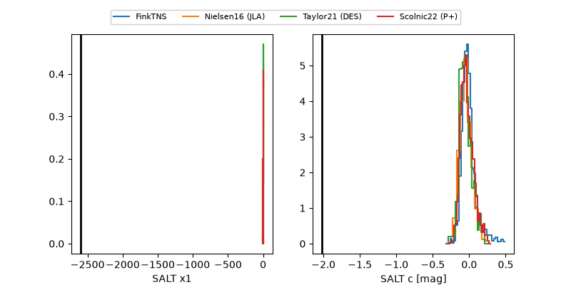

ZTF26ablrsnp
Target ZTF26ablrsnp at 2026-08-08 06:26
Aliases and brokers:
FINK-ZTF: ztf.fink-portal.org/ZTF26ablrsnp
Lasair-ZTF: lasair-ztf.lsst.ac.uk/objects/ZTF26ablrsnp
ALeRCE-ZTF: alerce.online/object/ZTF26ablrsnp
Direct TNS query: direct search
alt names
ZTF26ablrsnp (ztf,fink_ztf)
Coordinates:
equatorial (ra, dec) = 291.5904,+4.70301
equatorial (HMS+DMS) = 19:26:21.69,+04:42:10.84
galactic (l, b) = (41.1320,-5.58103)
Flags:
peak dt: +1.8
Photometry:
last atlaso=19.15, ztfg=19.52
2 atlaso, 3 ztfg detections
Lightcurve

Visibility



Additional plots
